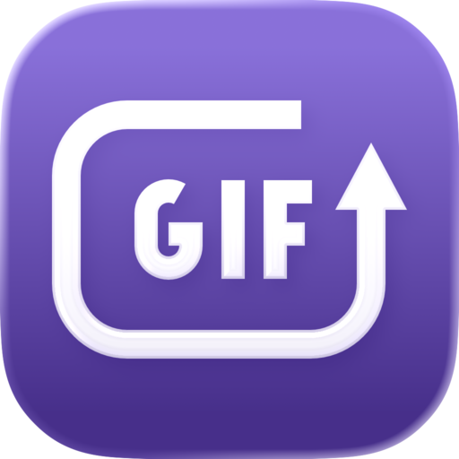
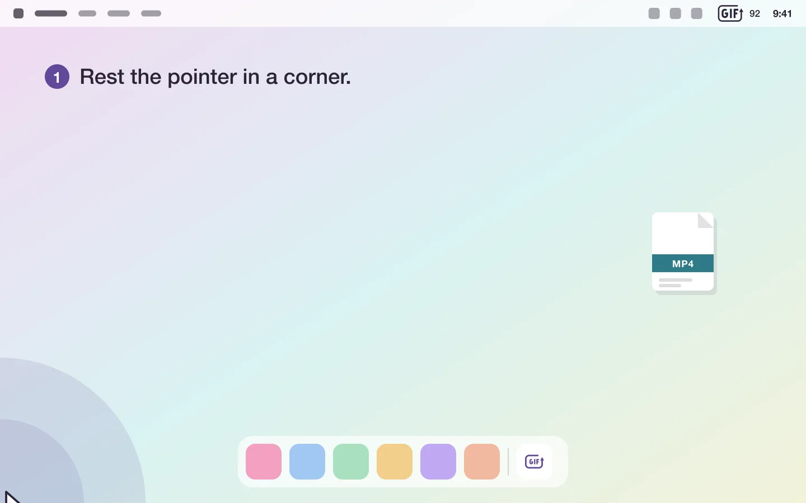
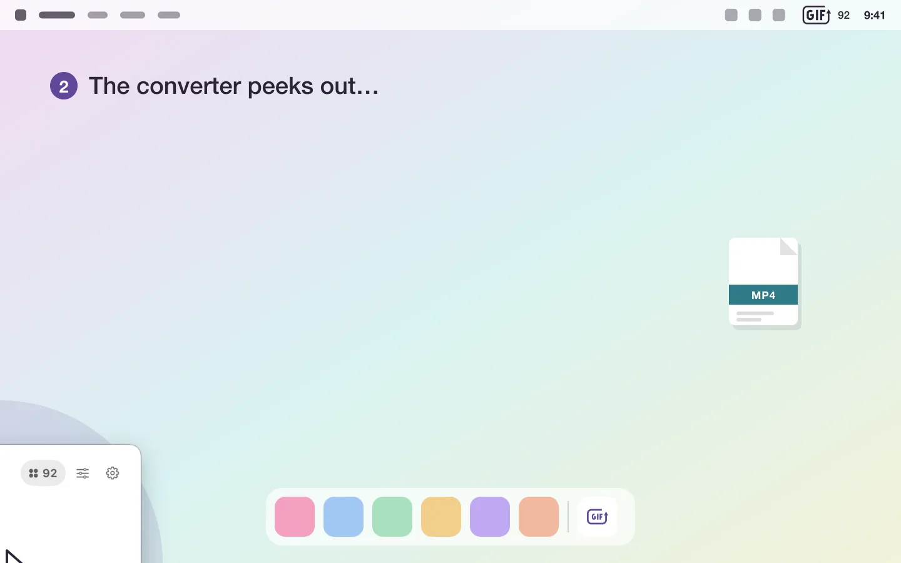
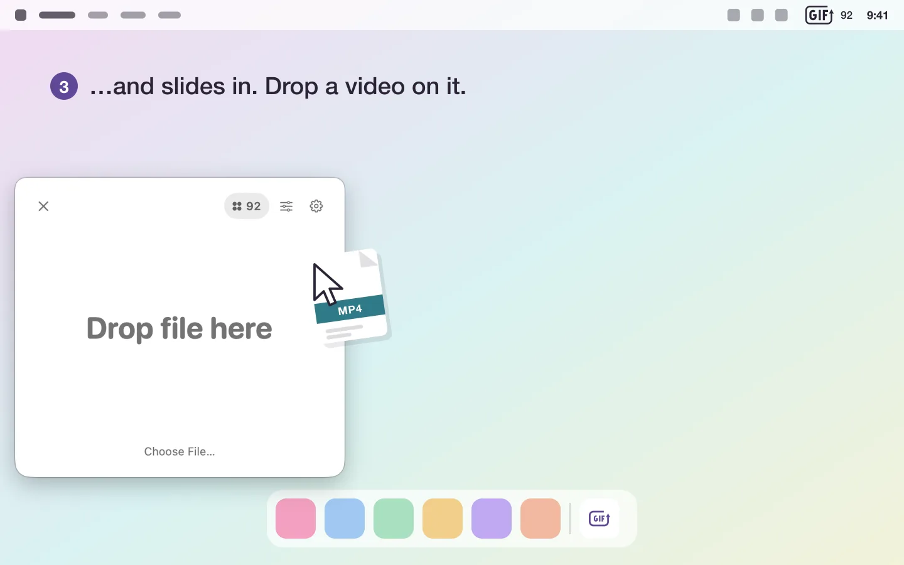
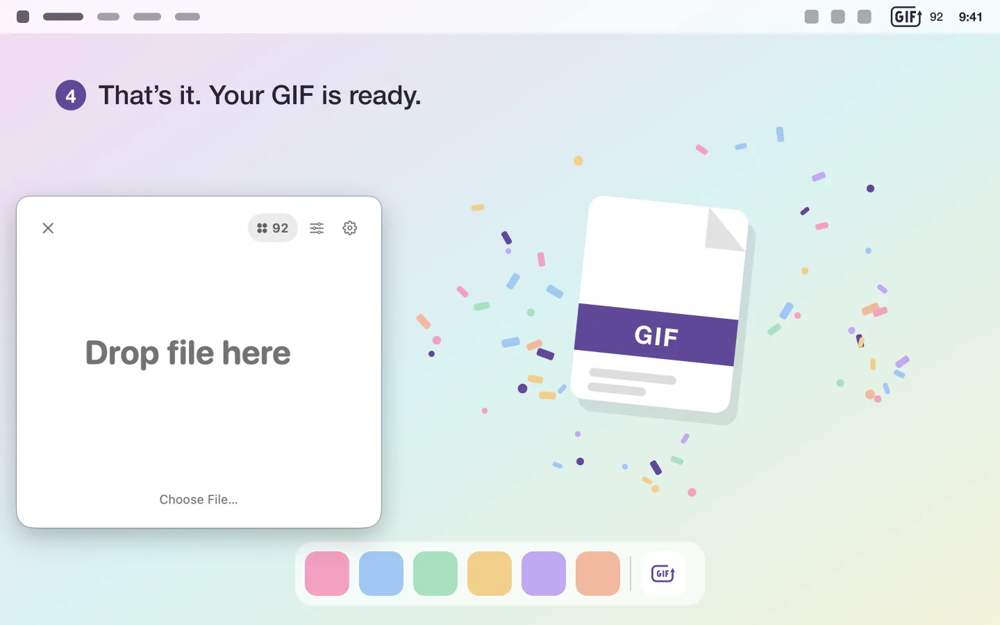

Lives in the menu bar
No Dock icon, no window to manage, no project to set up. Look for the small rounded GIF badge at the right-hand end of the menu bar. The panel never takes focus from the app you were using.
Drop a video, get a GIF.
A GIF converter that stays out of your way. It lives in the menu bar, opens when your pointer finds a corner, and never steals focus from what you were doing.





Rest the pointer in the bottom-left corner of the screen for a moment. Pick a different corner, or switch the feature off, in Settings.
No Dock icon, no window to manage, no project to set up. Look for the small rounded GIF badge at the right-hand end of the menu bar. The panel never takes focus from the app you were using.
Rest the pointer in a corner and the panel arrives; press Escape and it's gone. Pick any corner, or switch it off. The macOS hot corners keep working as before.
The S, M, L and XL presets set frame rate, size and palette in one tap, or dial in your own. Two-pass palette generation gives colour that holds up against the source, and Lanczos scaling never upscales past the original.
Video files macOS can decode, including .mp4, .mov and .m4v, plus .gif, .png and .jpg images. Screen recordings from macOS or the iOS Simulator work directly.
You get 25 free conversions; a failed or cancelled one costs nothing. Then buy a pack of 100, or unlock unlimited conversions for good with a one-time Lifetime Unlock.
Quick Gif collects no data, has no servers and no account. Its only network connection is to Apple's App Store, for purchases. Read the privacy policy.